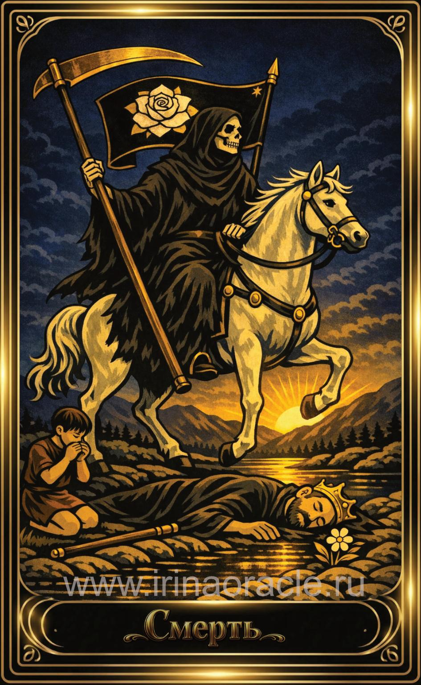

Смерть — значение карты Таро
Смерть — значение карты Таро

Смерть — это карта глубокой трансформации, завершения и обновления. Она символизирует конец старого этапа и освобождение пространства для нового. Это не про физическую смерть, а про внутренние перемены, которые невозможно остановить. Карта приходит тогда, когда пора отпустить прошлое и позволить жизни измениться.
Общее значение
Смерть указывает на завершение цикла, трансформацию и переход. Это момент, когда старые формы, отношения или убеждения больше не работают и требуют обновления. Карта говорит о необходимости отпустить то, что удерживает.
Это время перемен, очищения и начала нового пути.
Любовь и отношения
В любви Смерть указывает на важные перемены: завершение старых сценариев, трансформацию отношений или переход на новый уровень. Иногда — на окончание связи, которая исчерпала себя.
В тени карта может говорить о страхе перемен, удерживании прошлого или болезненном сопротивлении неизбежному.
Работа и финансы
В работе Смерть указывает на завершение этапа: смену работы, закрытие проекта, трансформацию направления или необходимость полностью пересмотреть подход. Это карта обновления и освобождения от старых структур.
В финансах она говорит о необходимости пересмотра стратегии и отказа от неэффективных решений.
Здоровье
Смерть указывает на глубокие процессы обновления, завершение старых состояний и переход к новому этапу. Иногда — на необходимость изменить образ жизни или привычки.
Это карта очищения, трансформации и восстановления.
Совет карты
Отпусти. Позволь старому уйти. Смерть советует не цепляться за то, что уже завершилось, и довериться процессу трансформации. Новое придёт, когда освободится место.
Это время смелости, честности и внутреннего обновления.
Теневая сторона
В тени Смерть проявляется как страх перемен, сопротивление неизбежному, попытка удержать прошлое или болезненная привязанность к старым формам.
Карта напоминает: трансформация неизбежна — вопрос лишь в том, будет ли она добровольной или вынужденной.